一次交互候选＝同一人对货架的连续操作会话。查看、放回、再操作可合并；仅路过不确认交互。层号由首次操作位置与多帧复核确定，不按腕点高度指定；跨层分段尚未验证。
本例仅单视频探索测试，评分未经校准。真实参考由助手观察原片制作，尚未经团队独立复核，不能报告跨场景准确率。
自动会话 2 段；主流程 177.092 秒，含视觉、一次复核、导出和校验；对照与验证累计 177.092 秒。离线再导出另列，不调用API。
| 输入方案 | 取件意见 | 模型自评分 | 层号来源与冲突 | 一次请求 |
|---|---|---|---|---|
| 当前主流程 | 无法判断 | None | 算法3；模型None；最终None | None秒 |
| 当前主流程 | 无法判断 | None | 算法3；模型None；最终None | None秒 |
None表示未知。取件意见和模型评分不是准确率；原始层号意见与最终冲突结果分别保存。
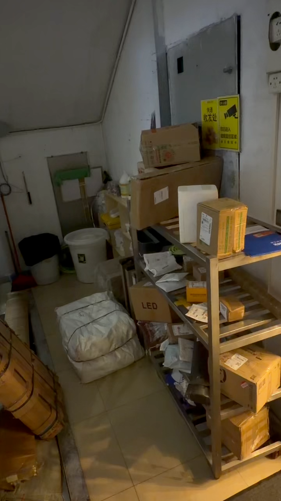
每个视频帧通过配准映射货架区域；配准失败时不使用该帧区域。请核查视频中的区域是否贴合真实货架。
5.800–8.633s。结束依据：person_observation_lost。
有无取件：None；模型自评分：None；一次请求：None秒。
未调用模型
层号依据：待复核
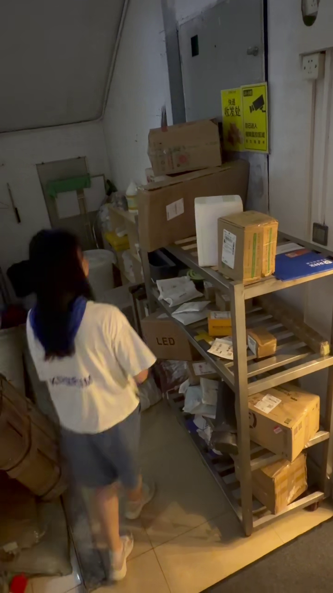
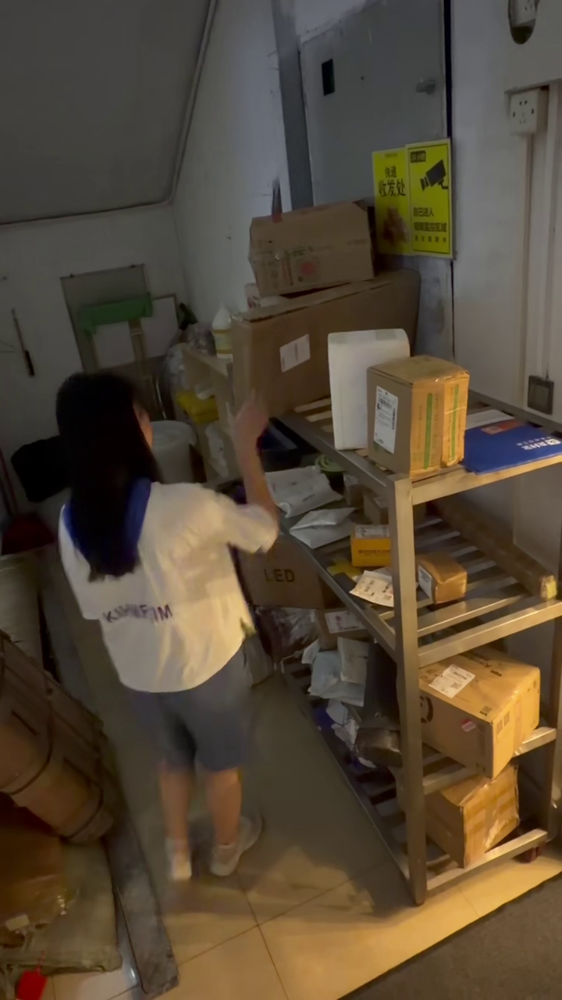
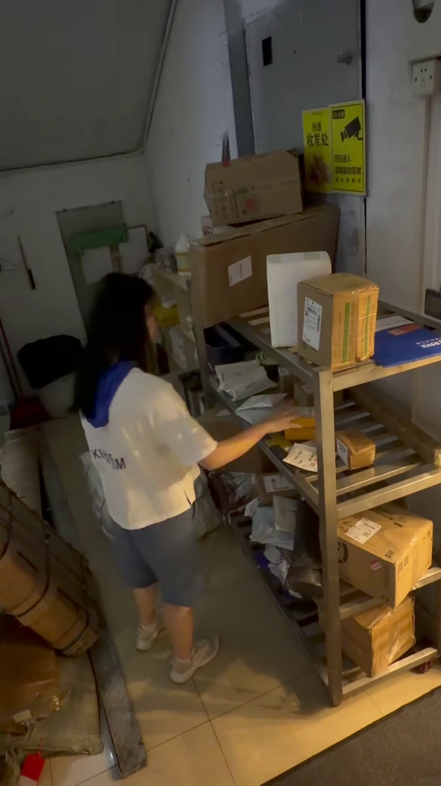
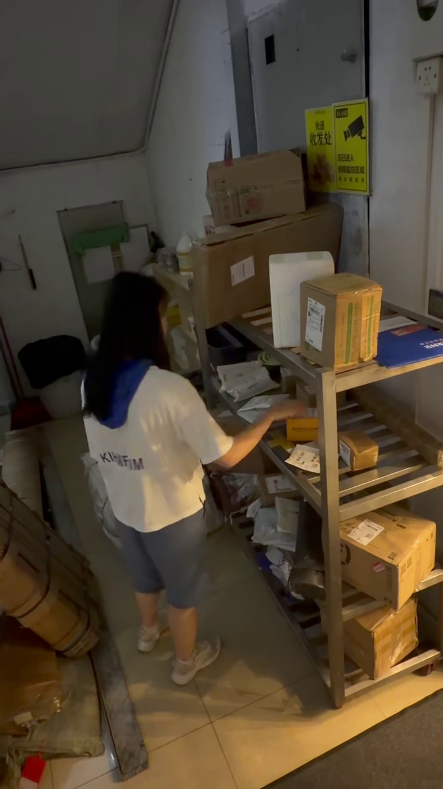
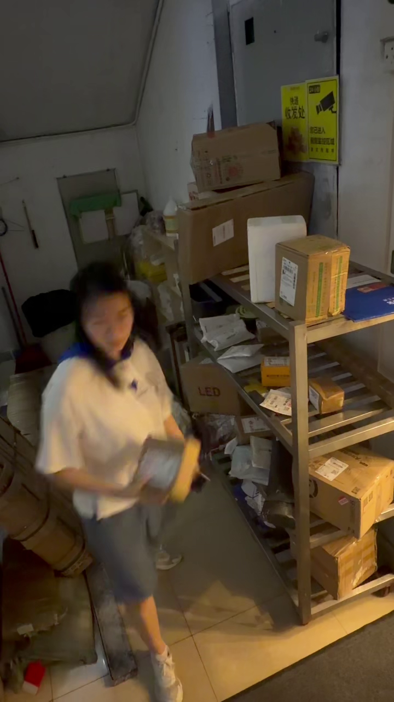
本地轨迹 P001 → 档案 人物未确定；状态 unmatched。独立匹配观测 5 次，匹配覆盖 45.5%。外观相似度不是身份概率。
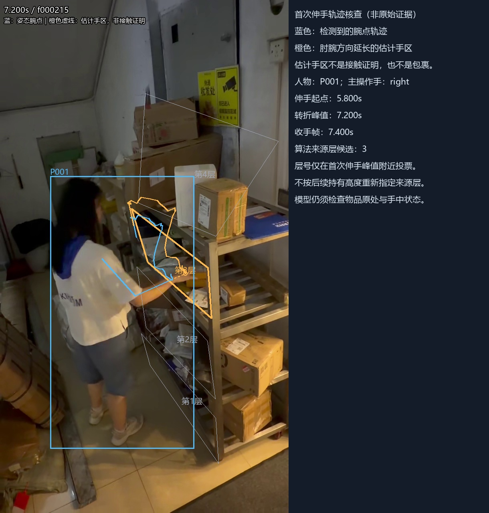
中间三帧来自首次伸手的实际轨迹转折；橙色点是几何估计，不是真实手部或包裹检测。
17.333–22.833s。结束依据：person_observation_lost。
有无取件：None；模型自评分：None；一次请求：None秒。
未调用模型
层号依据：待复核
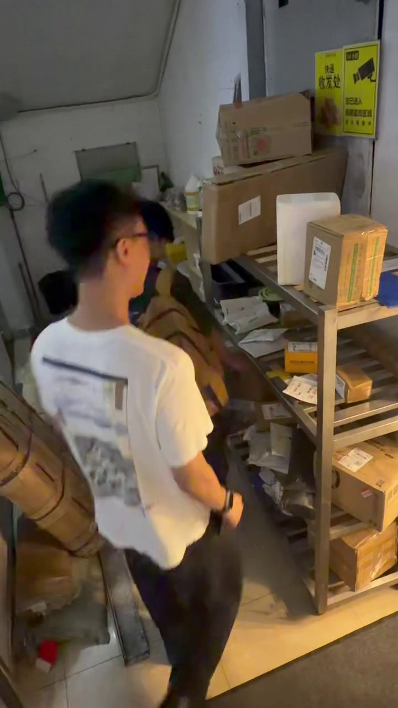
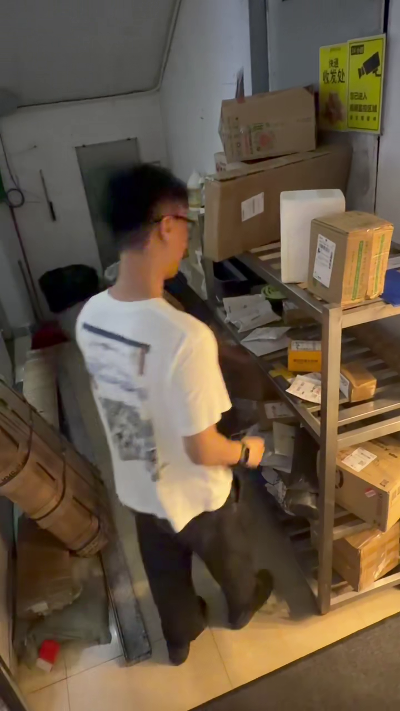
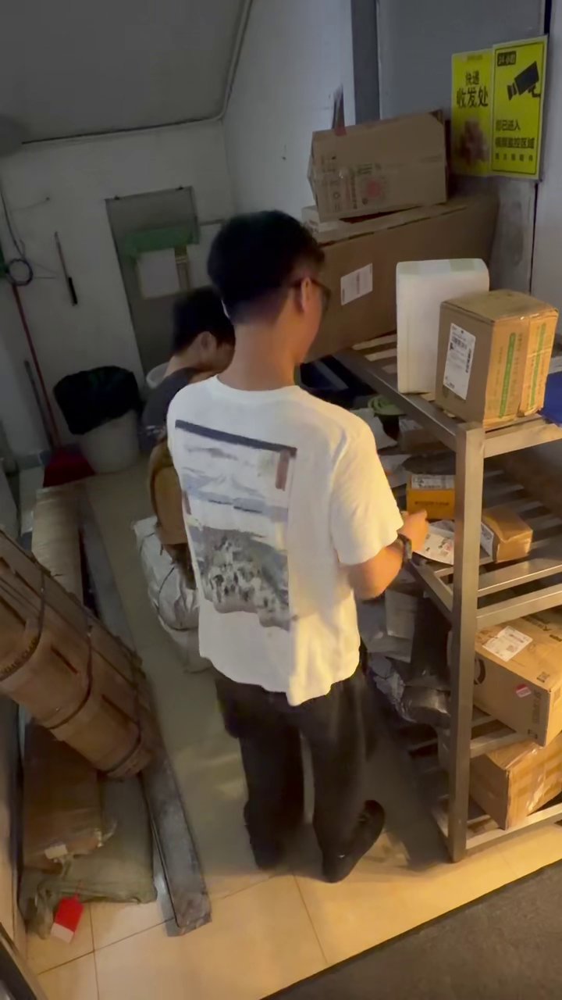
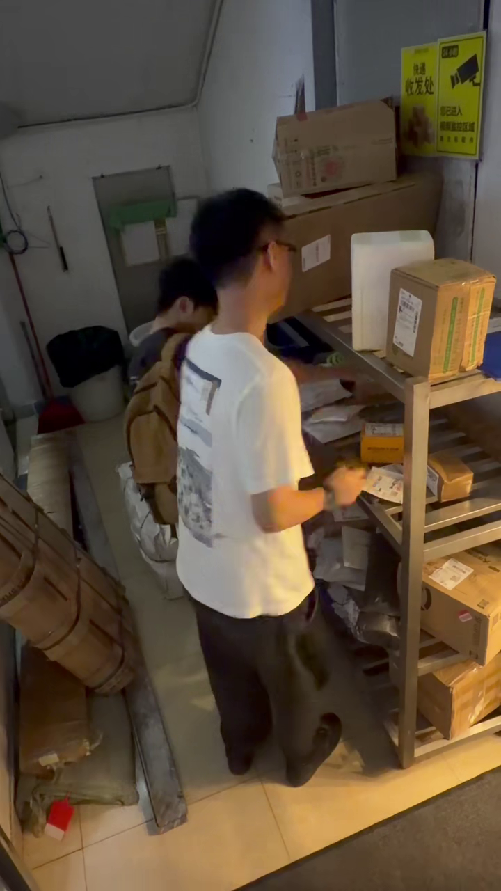
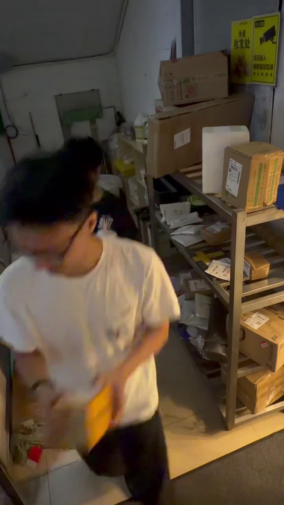
本地轨迹 P004 → 档案 G0004；状态 matched。独立匹配观测 19 次，匹配覆盖 90.5%。外观相似度不是身份概率。
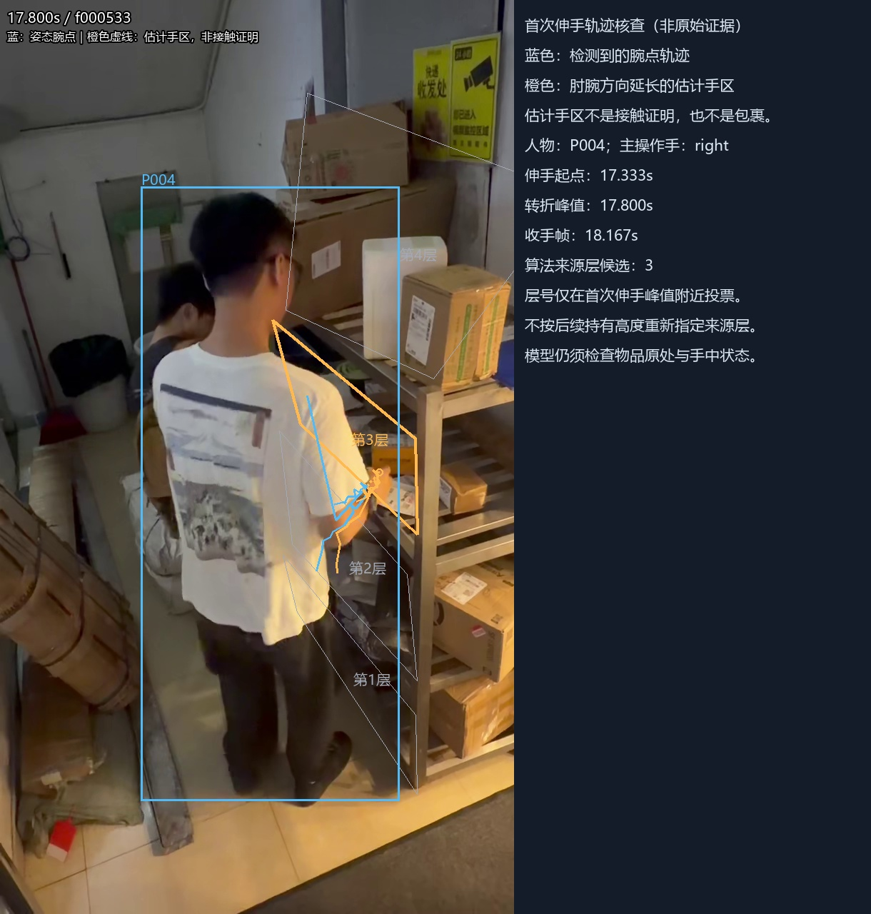
中间三帧来自首次伸手的实际轨迹转折；橙色点是几何估计，不是真实手部或包裹检测。
{
"status": "completed",
"source_path": "C:\\Users\\12908\\Desktop\\黑客松\\安克_26.10.17\\code - anker\\test_video_new\\site_20261016\\B\\1_package.mp4",
"source_sha256": "d0f9d2c3f1dc0da32850332d0f120148726c58822bf6550e0cab12eb063d282f",
"session_definition": "same person continuous shelf-operation/inspection visit; origin layer reviewed separately",
"settings": {
"wrist_confidence": 0.35,
"enter_ms": 300,
"switch_ms": 800,
"max_start_gap_ms": 150,
"same_visit_gap_ms": 5000,
"departure_ms": 1000,
"missing_ms": 750,
"margin_px_at_720": 10,
"minimum_reach_motion_px_at_720": 5,
"minimum_observations": 3,
"departure_distance_px_at_720": 50,
"departure_body_width_ratio": 0.8
},
"sampling": [
"start-300ms",
"first reach onset",
"first reach peak",
"withdrawal",
"end+300ms"
],
"sampling_fallback": "25%/50%/75% only when no reliable approach-retreat; explicitly labelled",
"layer_assignment": "first reach estimated hand region vote; wrist trigger never sets layer; VLM verifies visible origin",
"api_calls_primary": 0,
"api_calls_controls": 0,
"api_calls_ablation": 0,
"score_calibrated": false,
"live_stream_implemented": false,
"parcel_model_primary": false,
"width": 720,
"height": 1280,
"fps": 29.960988296488946,
"source_frames": 768,
"duration_ms": 25633.37673611111,
"timestamp_basis_counts": {
"decoder_media_pts": 768
},
"observation_wall_s": 116.155,
"model_and_source_setup_s": 2.625,
"parcel_model_enabled": false,
"run_device": "cuda",
"hardware": {
"python_executable": "C:\\Users\\12908\\Desktop\\黑客松\\安克_26.10.17\\code - anker\\.venv-track\\Scripts\\python.exe",
"run_device": "cuda",
"torch": "2.6.0+cu118",
"opencv": "5.0.0",
"gpu_name": "NVIDIA GeForce RTX 4060 Laptop GPU"
},
"timings": {
"pose": {
"mean_ms": 39.402,
"p95_ms": 61.641,
"total_s": 30.26,
"count": 768
},
"registration": {
"mean_ms": 100.115,
"p95_ms": 143.773,
"total_s": 76.889,
"count": 768
},
"identity": {
"mean_ms": 5.085,
"p95_ms": 54.39,
"total_s": 3.905,
"count": 768
}
},
"registration_valid_frames": 768,
"calibration_reference": {
"reference_kind": "external_image",
"reference_image_sha256": "1631adc80391bd3c60ac46898ee0c020cc195712a60dda248172ed918f37808d",
"reference_width": 720,
"reference_height": 1280,
"reference_scale_xy": [
1.0,
1.0
],
"source_kind": "video_frame",
"reference_source_time_ms": 0,
"alignment_checked_per_frame": true
},
"person_archive": {
"path": "C:\\Users\\12908\\Desktop\\黑客松\\安克_26.10.17\\code - anker\\outputs\\anker_core_validation_20261016_01_A\\gallery_snapshot.json",
"sha256": "8ca3746c4a0ce2a132f5c78aac915e9be7b0000c87de373057c1dd8c60af55f5",
"profiles": 6,
"model": "osnet_x0_5",
"weights_sha256": "e96cbd20ee9cc3c6dcc0e8f4fbba8c8069d47647a5a96a59ce381fb785c54f68",
"read_only_in_B": true
},
"session_detection_s": 0.083,
"keyframe_extraction_s": 8.092,
"video_export_s": 46.638,
"primary_pipeline_elapsed_s": 177.092,
"session_count": 2,
"event_count": 2,
"reviews_completed": 0,
"reviews_failed": 0,
"primary_review_api_s": 0,
"primary_review_wall_s": 0,
"experiment_elapsed_s": 177.092,
"all_events_human_verified": false,
"api_calls_total": 0
}null
null